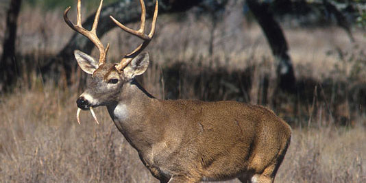
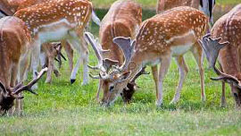

Đây là phân loài có tầm vóc nhỏ bé, hươu xạ trưởng thành chỉ đạt trọng lượng khoảng 15kg, trái lại ở Liên Xô trước đây và Trung Quốc, thì loài hươu xạ có thể nặng đến 40 kg. Hươu xạ Cao Bằng có dạng ngoài hơi giống Cheo cheo nhưng lớn hơn nhiều, mõm chúng tròn, đầu dài và không có sừng, tai to, đuôi ngắn. Con đực có hai răng cửa dài, lòi ra khỏi mép. Con đực có tuyến xạ nằm khoảng giữa rốn và cơ quan sinh dục Chân cao hươu xạ cao, mảnh khảnh, chân sau dài hơn chân trước 1/3 nên khi đứng sau cao, trước thấp, lưng gù. Đực, cái đều không có sừng, không tuyến trước ổ mắt. Bộ lông dầy, lông dài xấp xỉ 3 cm, thô, hơi cứng, nhẹ, xốp, phần gốc thẳng màu trắng, phần trên uốn sóng và có băng màu nâu xám, vàng nhạt xen kẽ, tạo cho Bộ lông có màu nâu xám lấm tấm vàng rất đều, tứ chi có màu thẫm.
Hươu xạ ăn lá, chồi, nụ, hoa, cây rừng, các loại cỏ, đôi khi ăn quả, không ăn động vật. Hươu cũng ưa các loại hoa màu trồng trên nương, rẫy. Nhìn chung, hươu ăn các loại cỏ, lá, quả, rêu đá và địa y. Chúng thích nghi với sinh cảnh núi đá vôi, có khả năng leo trèo giỏi ở các vách núi đá thẳng đứng. Hươu xạ là loài hẹp sinh cảnh, chỉ ở núi đá vôi có độ cao 400–1000 m trên mặt biển, nơi có độ dốc lớn và hiểm trở. Hươu ưa rừng thưa, có tầng cỏ quyết phát triển, ít ở rừng già, hoạt động chủ yếu vào chiều hôm và rạng sáng, thường từ 9h - 16h ban ngày, 19h - 4h đêm hươu nghỉ, Hươu chỉ ghép đôi vào thời kỳ động dục.Sống khoảng 10 năm, thành thục sinh dục sau 2 năm tuổi. Hươu sinh sản gần như quanh năm nhưng chủ yếu sinh sản vào mùa thu - đông, chửa 5-6 tháng, mỗi lứa có thể đẻ 1-3 con. ghép đôi từ tháng 3-12, tập trung trong các tháng 6, 7, 8. Mang thai 185-195 ngày; đẻ từ tháng 9, đẻ nhiều vào tháng 12-2, trung bình năm đẻ 1 lứa/1 con.
